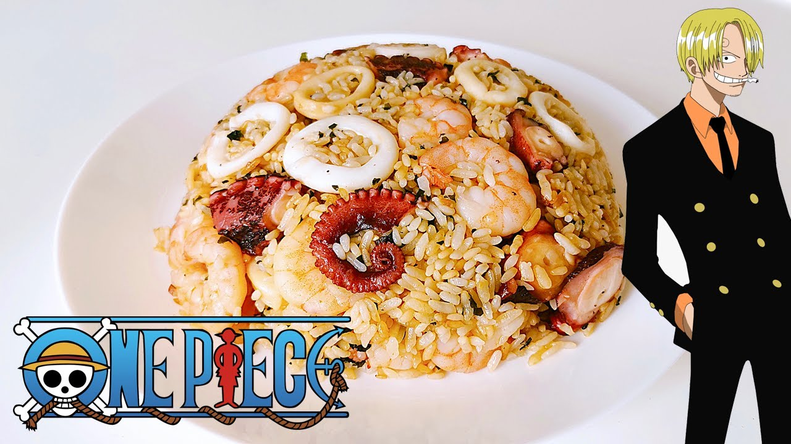

Fried Rice

Quick, simple but still delicious and satisfying, it embodies Sanji’s philosophy that good food doesn’t need to come from fancy ingredients!
I started watching One Piece almost 15 years ago and it remains one of my favorite series to date. As someone who loves to make food, I have a special place in my heart for Sanji, who not only cooks well, but also preaches a certain respect for food that I find admirable. “To me, any hungry person’s a customer. The vast ocean can be very cruel. It’s awful to not have any food or water…just awful…I understand starving people more than anyone. I don’t care if you wanna die with dignity, but if you eat up, you’d be able to look forward to a new tomorrow, won’t you?”, said Sanji as he presented a pirate who hadn’t eaten for days with a piping hot plate of seafood rice. This dish is the first of Sanji’s that we see in the series and brings back strong feelings of nostalgia.
Ingredients
- 2/3 cup jasmine rice
- 1 1/2 cup water
- 1 green onion
- 150g seafood medley
- 3 eggs
- 1 tsp salt
- 2 tbsp oil
Steps
- Wash the rice twice, drain, and cook with the 1 1/2 cup water. Wait until the rice is cooked before proceeding with the rest of the steps.
- Cut the green onion into thin circular pieces and set aside
- Using 1 tbsp oil, stir fry the seafood medley until fully cooked. Careful not to overdo it, but make sure it’s not raw.
- Beat the eggs until even. In a hot pan, add a tbsp oil and the egg. While the egg is still half raw, put in the rice and mix together. If using a cast iron pan like what I used, stir fry on medium heat so that the egg and rice don’t stick. Once all the egg is mixed in well with the rice and cooked, it’s ok to turn up the heat to high to get more aroma.
- Add in the seafood medley and mix.
- Add in the green onion and turn off the heat. Mix well immediately with the heat off to have the flavors of the green onion infuse into the rice, but not be overcooked.